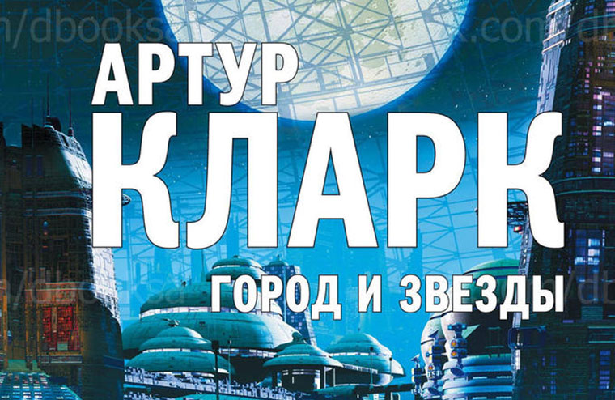
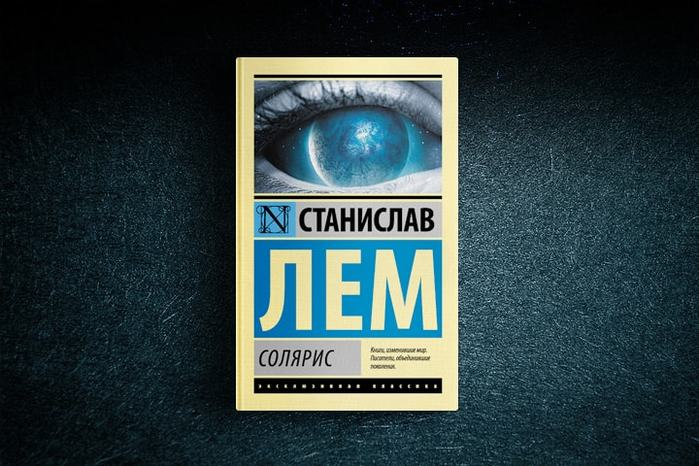
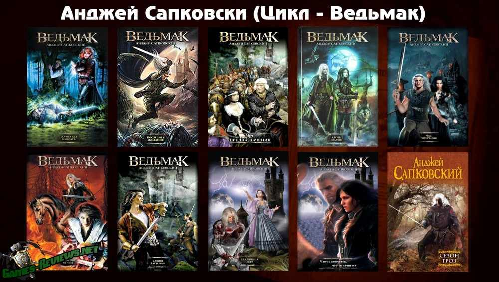

|  |
Город и звезды: Научно-фантастический роман британского писателя-фантаста Артура Кларка, опубликованный в 1956 году. Основан на ранней повести Кларка «Да не настанет ночь» (англ. Against the Fall of Night), опубликованной в журнале Startling Stories в 1948 году, после того, как редактор Astounding Science-Fiction Джон Вуд Кэмпбелл-младший, по словам Кларка, отверг её.
Книги существенно отличаются по содержанию, хотя основной сюжет и идейное наполнение принципиально не изменились при переработке повести в роман. В предисловии к одному из сборников Кларк рассказал анекдот о психиатре и пациенте, которые признались, что однажды обсуждали его на терапии, не понимая в то время, что один прочитал основной роман, а другой раннюю повесть. В предисловии к самому роману Кларк писал, что к переработке повести его подтолкнул прогресс науки, особенно в информационных технологиях, из-за чего идеи из неё стали выглядеть довольно наивными.
|
|  |
Главный герой романа - Крис Кельвин - прибывает на станцию далекой планеты. Солярис - так назвали неведомое небесное тело - вела себя совершенно по-другому, нежели привыкло считать человечество. На планете есть жизнь, и представлена она всего одним существом. Зато каким! Весь Солярис покрывает огромный океан из непонятной плазмы. Океан разумен, он создает образы и вроде как даже пытается контактировать с людьми!
Сейчас команда станции "Солярис" насчитывает всего два человека (третий только что совершил суицид). Прибывает новичок Кельвин - и не понимает, что происходит. Один из членов команды просто запирается в лаборатории, другой ведет себя очень настороженно и боязливо.
Как оказалось, океан каким-то образом проникает в сознание экипажа - и воссоздает наиболее сильные образы. В случае с Кельвином это - его погибшая невеста по имени Хари.
Этих "фантомов" нельзя убить. От них нельзя скрыться. А самое ужасное - призраки прошлого сами не осознают, что что-то не так.
|
|  |
«Сага о ведьмаке» (польск. Saga o wiedźminie) — цикл книг польского писателя Анджея Сапковского в жанре фэнтези. Первый рассказ цикла увидел свет в 1986 году, а последняя книга — в 2013. Действие книг происходит в вымышленном Мире «Ведьмака» (англ. Neverland или англ. The Continent), напоминающем Европу времён позднего средневековья, где рядом с людьми существуют разного рода волшебные существа и чудовища.
Геральт из Ривии — один из последних «ведьмаков», бродячих охотников на чудовищ. В то время как первые книги цикла представляют собой сборники рассказов о приключениях Геральта, нередко сатирически обыгрывая фольклор и классические литературные сказки, сюжет последующих книг представляет собой более масштабную историю, построенную вокруг Геральта и его воспитанницы Цири, обладающей сверхъестественными способностями. По мотивам произведений сняты два сериала — польский (2002) и американский (2019), и фанатский фильм «Полвека поэзии спустя»; выпущены компьютерные игры: «Ведьмак», «Ведьмак 2: Убийцы королей», «Ведьмак 3: Дикая охота» и Гвинт; написана и поставлена рок-опера; на родине писателя издавались комиксы о похождениях Геральта и других героев его саги.
|